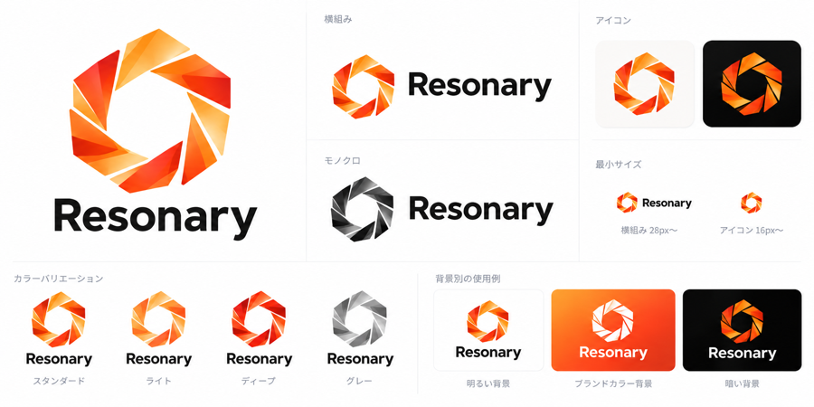

BUSINESS GROWTH SUPPORT事業を支える、
事業を支える、
4つの支援領域。
お客様との接点をつくるところから、
受注につなげる営業活動、
組織の強化と日々の運用まで。
それぞれの場面で、事業を支援します。

リード獲得から受注まで。
営業のあらゆる場面で、
事業の成長を支える。
それぞれの個性が出会い、重なり合うことで、
一人では生まれなかった可能性が動き出す。
私たちResonaryは、リード獲得から受注まで、
営業のあらゆる場面を支援する会社です。
集客・販売から営業活動、組織づくり、日々の運用まで。
事業の成長を、ともに支えていきます。
リード獲得から受注まで。
営業のあらゆる場面を支援。
お客様との接点をつくるところから、
受注につなげる営業活動、
組織の強化と日々の運用まで。
それぞれの場面で、事業を支援します。
リードの獲得から販売まで。
お客様との接点をつくり、事業の魅力を届けるための活動を支援します。
商談から受注につなげる営業活動を支援。
営業の実行を担い、事業の成長を支えます。
営業チームの力を、事業の力へ。
組織として営業活動を進めていくための体制づくりと強化を支援します。
日々の業務を支え、営業に向き合える環境へ。
業務の運用を担い、事業を円滑に進めるためのオペレーションを支援します。
違うからこそ、
広がる可能性がある。
Resonaryからの最新情報を、
こちらでお知らせします。
私たちの事業と、採用に関する情報をご紹介します。
集客・営業・組織・業務運用に関するご相談はこちらから。